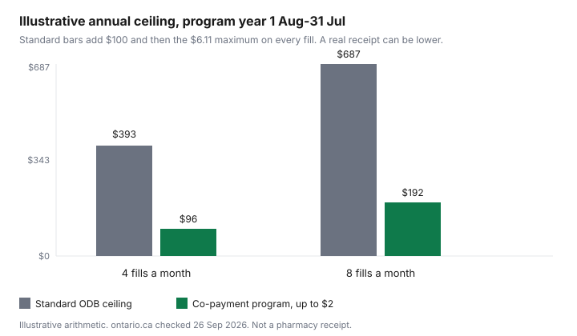

Healthcare · Canada
Ontario Drug Benefit at 65: The $100 Deductible, the $6.11 Co-Pay, and the Seniors Co-Payment Program
Ontario does not make you apply for the Ontario Drug Benefit when you turn 65. It does make you apply if you want the lower co-pay. The coverage page on ontario.ca, updated 18 Aug 2026 and opened 26 Sep 2026, says the ministry sends a letter about three months before your 65th birthday. Coverage starts on the first day of the month after that birthday. A senior who is not in the Seniors Co-Payment Program pays the first $100 of total prescription costs in the program year, then up to $6.11 for each prescription filled or refilled. The Seniors Co-Payment Program page, updated 2 Jul 2026, waives that deductible and cuts the co-pay to up to $2 when income is at or under the 2026/27 limits. This page is the enrolment map. It is not medical advice. Confirm the letter, the formulary, and the co-pay with your pharmacist and with the program.
Key takeaways
- ODB for seniors starts automatically on the first day of the month after you turn 65. Bring the Ontario health card. The letter arrives about three months before the birthday.
- Without the co-payment program, the program year (1 Aug to 31 Jul) has a $100 deductible, then a co-pay of up to $6.11 per fill. The first year of eligibility is prorated to 31 Jul.
- For 1 Aug 2026 to 31 Jul 2027 the Seniors Co-Payment Program limits are $25,480 individual net income and $42,290 combined. Enrolled seniors pay no deductible and up to $2 per eligible fill.
- 30 Sep is the date to apply if you want reimbursement for eligible drugs from the program year that already ended on 31 Jul. It is not described as the day current-year enrolment closes. Receipts for an enrolled senior are due by 31 Oct.
- A spouse's workplace plan is a coordination question, not a reason to skip ODB. The order of payment sits on the two-plan guide. The years before 65 sit on the retiree bridge.
How ODB coverage starts automatically at 65 and what the first-year letter means
The letter is a start-date notice, not an application for basic ODB. Ontario says you join automatically on the first day of the month after you turn 65. Turn 65 on 15 Apr and the official start date is 1 May. Go to an Ontario pharmacy on that date with the health card. Prescriptions filled outside Ontario are not covered. The pharmacist may need the health card to confirm eligibility. Tell the prescriber and the pharmacist when the letter arrives, so the next prescription is one of the drugs the program lists. The coverage page says the formulary covers most of the cost of more than 5,900 medications, plus almost 1,500 additional products through the Exceptional Access Program.
The same letter is the moment to look at the Seniors Co-Payment Program. You can apply up to three months before your 65th birthday. A spouse under 65 is not enrolled in the co-payment program until they turn 65, even if their income is on your application. If you already have ODB for another reason before 65, such as Ontario Works, the Ontario Disability Support Program, professional home and community care, a long-term care home, or the Trillium Drug Program, the senior rules are not your only path. The bridge before 65 is where those earlier years are priced. This page starts on the birthday month.
People who are 24 or younger and not covered by a private plan are on OHIP+, which is a different door into the same formulary. Trillium is the door for Ontario residents with a health card who do not already qualify for ODB and who spend about 4 percent or more of household net income on prescriptions. A senior who is on ODB is not the person the Trillium page tells to apply. Read both pages before you mail the wrong form.
Deductible and co-pay: $100 first, then up to $6.11 per prescription
Unless you qualify under another ODB category or you are enrolled in the Seniors Co-Payment Program, a senior pays two things. The first is the deductible: the first $100 of total prescription costs in the program year, 1 Aug to 31 Jul. That $100 is paid down as you fill prescriptions. It is not a fee stacked on top of a co-pay for the same dollar of drug cost. After the deductible is paid, the co-pay is up to $6.11 for each prescription filled or refilled. "Up to" matters. A fill can cost you less than $6.11. This page does not invent a lower amount.
The first year is smaller when you join late in the program year. The deductible runs from your start date to 31 Jul. Ontario prints the first-year amounts by birth month: July $100.00, August $91.67, September $83.33, October $75.00, November $66.67, December $58.33, January $50.00, February $41.67, March $33.33, April $25.00, May $16.67, June $8.33. The worked example on the page is an April birthday: start 1 May, first-year deductible $25. On the next 1 Aug the ordinary $100 applies, unless the co-payment program has removed it.
A three-month supply of some chronic drugs, including some diabetes, cholesterol, and blood-pressure medicines, means fewer co-pays. Ask the pharmacist which drugs qualify. Travel outside Ontario can allow one larger supply in the program year, and you still pay the deductible or co-pay on that supply. Fills outside the province are not ODB fills. Allergy shots and epinephrine auto-injectors have their own coverage rules on the same page, including a special authorization form for allergy-shot medication.
Seniors Co-Payment Program: $2 co-pays and no deductible under the 2026/27 limits ($25,480 single / $42,290 couple)
The co-payment program is an application. It is not automatic with the birthday letter. For the program year 1 Aug 2026 to 31 Jul 2027, the individual annual net income threshold is $25,480. That figure applies if you do not have a spouse, if you have a married spouse with whom you no longer live in a conjugal relationship, or if your spouse lives in a long-term care home or a community home for opportunity. The combined threshold is $42,290. That figure applies if you have a spouse other than the situations just listed. The spouse's information and signature go on the application regardless of the spouse's age, and regardless of whether the spouse lives outside Ontario. Both of you consent to the ministry checking net income with the Canada Revenue Agency.
Once enrolled, you pay no annual deductible and a co-pay of up to $2 for each eligible prescription. The previous row on the same page, for 1 Aug 2024 to 31 Jul 2026, was $25,000 individual and $41,500 combined. Future years are reviewed against the Ontario Consumer Price Index. The page does not print a 2027/28 number, so this guide does not invent one. If the household does not file a return, or a notice of assessment is not available, the page lists other proof: T4 or T5 slips, a T1 General, foreign assessment documents, CPP, EI, OAS, disability payments, an employer or accountant letter, GST/HST notices, or a signed no-income letter. Bank statements are not accepted.
You do not reapply every year if the CRA has verified the income. You do get reassessed if spousal status changes, or if a spouse moves into or out of long-term care or a community home for opportunity. If you were enrolled on other proof of income, you send updated documents each year. A confirmation letter states the coverage start date and who is enrolled.
Program year 1 Aug–31 Jul and applying before the 30 Sep cutoff
The Seniors Co-Payment Program year is 1 Aug to 31 Jul, the same window as the senior deductible year. The page says to apply by 30 Sep to be reimbursed for any eligible drug received in the previous program year, 1 Aug to 31 Jul. Checked on 26 Sep 2026, that 30 Sep date is four days away, and it is about the year that already ended on 31 Jul 2026. The page does not say that 30 Sep closes enrolment for the year that started on 1 Aug 2026. Apply when the income test fits. If you want the prior year reimbursed, the printed date is 30 Sep. There is no extra urgency language on the government page, and none is added here.
Receipts are a second clock. For seniors in the co-payment program, prescription receipts and supporting documents must be received no later than three months after the program year ends, which the coverage page states as 31 Oct. The official receipt is the pharmacy receipt signed by a pharmacist, or a Patient Medical Expense Report with a pharmacy stamp and the pharmacist's signature. Cash-register slips do not count. Mail them, with the health card number or the program file number, to Ontario Drug Benefit Program, Ministry of Health, P.O. Box 384, Station D, Etobicoke ON M9A 4X3. Online submission is on the Ontario Drug Benefit receipt form.
Use the online Seniors Co-Payment Program application on the Ontario Drug Benefit forms site when you can. It checks that the file is complete before you send it. A paper copy can be mailed to you. Toronto phone 416-503-4586, toll-free 1-888-405-0405, email seniors@ontariodrugbenefit.ca. The same numbers are the contact line after you are enrolled.
| Pattern | 4 fills a month (48 in the year) | 8 fills a month (96 in the year) |
|---|---|---|
| Standard ODB senior, deductible then maximum co-pay | $100 + 48 × $6.11 = $393.28 ceiling | $100 + 96 × $6.11 = $686.56 ceiling |
| Seniors Co-Payment Program, no deductible, maximum $2 | 48 × $2 = $96 | 96 × $2 = $192 |
| Step | What the page says |
|---|---|
| Form | Seniors Co-Payment Program application, online on the Ontario Drug Benefit forms site, or a paper copy requested by phone or email. |
| Income proof | CRA consent so the ministry can verify net income. If there is no notice of assessment, send the other documents the page lists. Bank statements are not accepted. |
| Where it goes | Online form for the application. Receipts, if you mail them: Ontario Drug Benefit Program, Ministry of Health, P.O. Box 384, Station D, Etobicoke ON M9A 4X3. |
| Dates | Program year 1 Aug to 31 Jul. Apply up to three months before you turn 65. Apply by 30 Sep to be reimbursed for eligible drugs from the previous program year. Receipts received by 31 Oct. |
| 2026/27 income test | $25,480 individual, or $42,290 combined, for 1 Aug 2026 to 31 Jul 2027. The single test has the spouse exceptions printed on the page. |

Coordinating ODB with a retiree or spouse's workplace plan
ODB does not cancel a retiree plan or a spouse's workplace plan. It changes what is left to pay. Tell the pharmacy about every plan. Only the part you pay out of pocket counts toward a Trillium deductible, and a similar idea applies when a private plan pays part of an ODB drug: get the explanation of benefits before you assume the $6.11 or the $2 is the whole story. Two workplace plans follow coverage status and the birthday rule, which is month and day, on the coordination guide. Do not rebuild that guide here.
A workplace formulary and the ODB formulary are different lists. A drug your retiree plan covers may still need a Limited Use code, or an Exceptional Access request, before ODB pays. The workplace drug guide is prior authorization and dispensing-fee caps. The retirement insurance review is what ends when work ends. If the private plan pays 100 percent of a drug, you may not see an ODB co-pay on that fill. If it pays nothing for that drug, the ODB rules above are the public layer, after you are eligible and the drug is covered.
Brand versus generic is already decided on the ODB page in one direction: coverage is generally for the lower-cost product, with exceptions when a generic is not available for ODB coverage or when you have had adverse reactions to at least two generics. The prescriber then uses the side-effect form and writes no substitution. That is a coverage rule. It is not a reason to switch a medicine without the prescriber.
Checklist: formulary lookups, Exceptional Access and pharmacy questions
Look the drug up on the formulary search linked from the coverage page before you pay cash. "Equivalent to" means a brand and a generic. "Limited Use" means the prescriber must write the three-digit Reason for Use code, and some of those drugs are time-limited. If the drug is not listed and not approved through Exceptional Access, ODB does not cover it. The Exceptional Access Program page is on ontario.ca. Your prescriber sends the request. You do not invent a clinical reason. Ask the pharmacist three questions: is this fill on the formulary today, has the deductible been met for this program year, and is the co-pay the standard amount or the co-payment-program amount.
Over-the-counter products are covered only in the cases the page describes: a prescription, and either a formulary listing or an approved Exceptional Access request. Nutrition products need a form stating they are the sole source of nutrition. Diabetic testing strips have annual maximums by treatment type on the coverage page: 3,000 with insulin, 400 with higher-risk medication, 200 with lower-risk medication, and 200 for diet and lifestyle only. Syringes and lancets are not ODB benefits. The tax-credit checklist is where unreimbursed amounts may meet a medical expense claim. This page does not recalculate that credit.
The provincial comparison is the page for what happens if you leave Ontario. ODB stops at the provincial border for fills. Fair PharmaCare and the RAMQ public plan are different clocks. Phone the Seniors Co-Payment Program if the letter and the pharmacy disagree. The numbers are 416-503-4586 and 1-888-405-0405.
Sources & date stamps
- Ontario, Get coverage for prescription drugs, updated 18 Aug 2026. Automatic start the first day of the month after 65, letter about three months prior, $100 deductible for 1 Aug to 31 Jul, co-pay up to $6.11, first-year deductible chart, formulary size, Limited Use, generics, receipt address and 31 Oct deadline. Opened 26 Sep 2026.
- Ontario, The senior's Ontario Drug Benefit deductible and prescription co-payment, updated 2 Jul 2026. Program year 1 Aug to 31 Jul. 2026/27 thresholds $25,480 and $42,290. Apply by 30 Sep for reimbursement of the previous program year. Co-pay up to $2 and no deductible once enrolled. Opened 26 Sep 2026.
- Ontario, Get help with high prescription drug costs (Trillium), updated 11 Feb 2026. Trillium is for people who do not already qualify for ODB. Deductible described as usually about 4 percent of household net income (line 23600, minus RDSP income). Co-pay up to $2 after the deductible. Not used as the senior co-pay.
- Ontario, Exceptional Access Program: ontario.ca/page/exceptional-access-program. The prescriber requests coverage. Opened as a live page 26 Sep 2026.
Frequently asked questions
Do I need to apply for ODB when I turn 65?
No. Ontario sends a letter about three months before your 65th birthday and enrols you on the first day of the month after you turn 65. Bring the Ontario health card to an Ontario pharmacy on that date. You do apply, separately, for the Seniors Co-Payment Program if you want the deductible waived and the co-pay reduced. You can send that application up to three months before the birthday.
What is the Seniors Co-Payment Program and who qualifies?
It is an application-based reduction of the senior Ontario Drug Benefit co-pay. For 1 Aug 2026 to 31 Jul 2027 the thresholds on ontario.ca are $25,480 individual annual net income and $42,290 combined. The individual test covers seniors without a spouse, seniors who no longer live with a spouse in a conjugal relationship, and seniors whose spouse is in long-term care or a community home for opportunity. Once enrolled you pay no annual deductible and up to $2 per eligible prescription. You need an Ontario health card and you are 65 or older.
When does the ODB program year start and end?
The senior deductible year and the Seniors Co-Payment Program year both run from 1 Aug to 31 Jul. Apply by 30 Sep if you want reimbursement for eligible drugs from the previous program year. On 26 Sep 2026 that date is about the year that ended 31 Jul 2026, not a stated close of enrolment for the year already underway. Receipts for the co-payment program must be received by 31 Oct. Your first year on ODB uses a smaller deductible based on the birth month, from the official start date through 31 Jul.
Can I use ODB and my spouse's workplace plan together?
Yes. Tell the pharmacy about both. ODB does not replace a spouse's or retiree's workplace plan, and the private plan does not cancel ODB. Which plan pays first, and the birthday rule for two workplace plans, is on the coordination guide rather than on the Ontario Drug Benefit page. A drug still has to be on the ODB formulary, or approved through Exceptional Access, before ODB pays its share. Confirm the explanation of benefits before you treat the $6.11 or the $2 as the full cost.
What if my drug isn't on the ODB formulary?
ODB does not cover a drug that is not on the formulary and not approved by the Exceptional Access Program. Search the formulary first. Limited Use drugs need the Reason for Use code on the prescription. If the drug is outside the list, the prescriber requests Exceptional Access. That request is a clinical decision, not a form you complete with a guessed diagnosis. Ask the pharmacist whether a listed generic is what ODB will pay for.